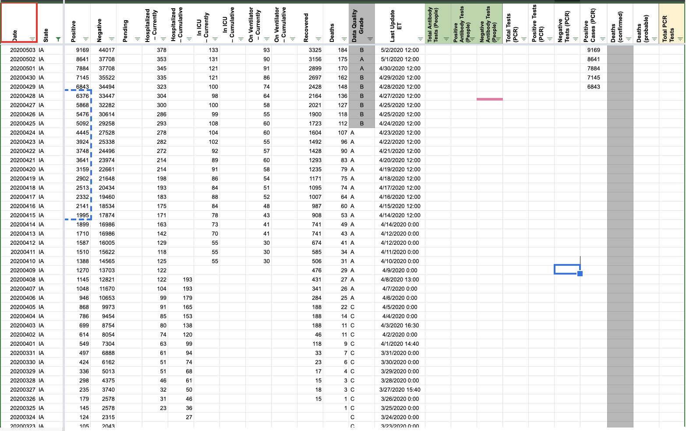
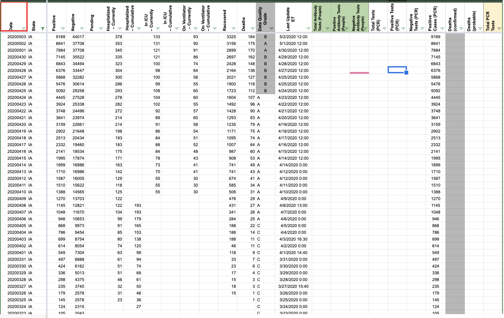
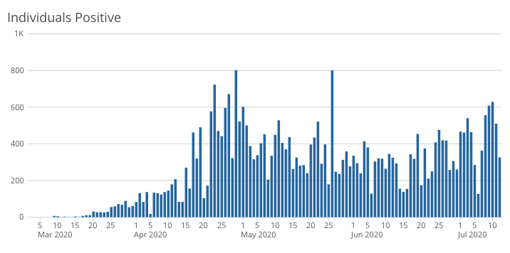

[IA] PCL Case Historicals
Issue number 596
pscsharon opened this issue on July 10, 2020 at 9:32 am
State: Iowa
Description: CTP started capturing Positive Cases (PCR) / positiveTestsViral on 4/29. We should back-fill the values before that date in Iowa. It is unlikely that IA used lumped values and then went to lab-confirmed only, given the consistent time-series for Positives. The wording before the dashboard changed also is in line with our definition for Lab Confirmed Only.
The state only reports cases confirmed by viral test. State must explicitly use the word “confirmed”, inviting interpretation by CSTE case definition, or specify they are using PCR/viral tests, to be labelled as lab-confirmed. Positives should therefore be copied into Positive Cases (PCR).
Source: Screenshots from Iowa’s websites & previous capture by CTP of the same information
Comments
Using IA’s data definition, it was confirmed that IA reports in lab-confirmed cases. Values from Positives were then copied into Positive Cases (PCR) in States Daily.
Before:  After: 
UPDATE: 7/13
While backfiling, we came across a graph on the website that reports confirmed cases by day [https://coronavirus.iowa.gov/pages/case-counts]. Here is the graph:

This graph is hoverable and the data can be automatically fetched from ArcGIS layers.